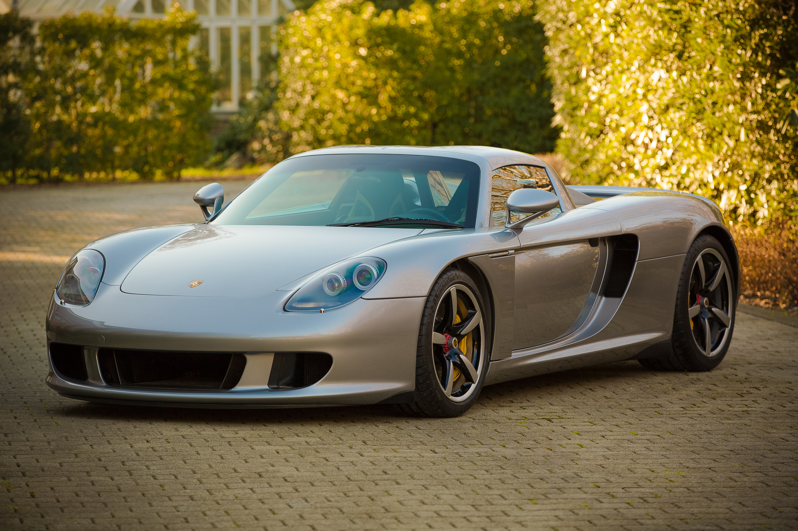

Porsche Carrera GT
Краткие характеристики
До 100 км/ч: 3.9 сек
Вес: 1380 кг
Мощность: 612 л.с.
МАксимальная скорость: 334 км/ч
С момента окончания производства Porsche Carrera GT прошло десять лет, а это значит, что он стал полноправным членом семейства Porsche Classic. Внешний вид и четкие линии автомобиля 980 типа, производство которого началось в 2003 году,
отчетливо демонстрируют его спортивную наследственность. Несмотря на то, что внешний вид модели указывает на ее стилистическую связь с линейкой серийных автомобилей Porsche, очевидно, что автомобиль также впитал в себя элементы легендарных
гоночных болидов Porsche.
Представленная в этой эксклюзивная серии, насчитывающей всего 1270 автомобилей, модель Carrera GT оборудована десятицилиндровым двигателем, оснащенным системой смазки с сухим картером. Рабочий объем
этого 5,5-литрового атмосферного двигателя V10, разработанного специально для езды по гоночному треку, был увеличен до 5,7 литров в стандартной серийной модели.
При мощности 450 кВт/612 Рс, 8000 об/мин и максимальной скорости
более 330 км/ч автомобиль Carrera GT устанавливает новые стандарты автомобилестроения. Передача мощности осуществляется при помощи шестиступенчатой маханической передачи.
